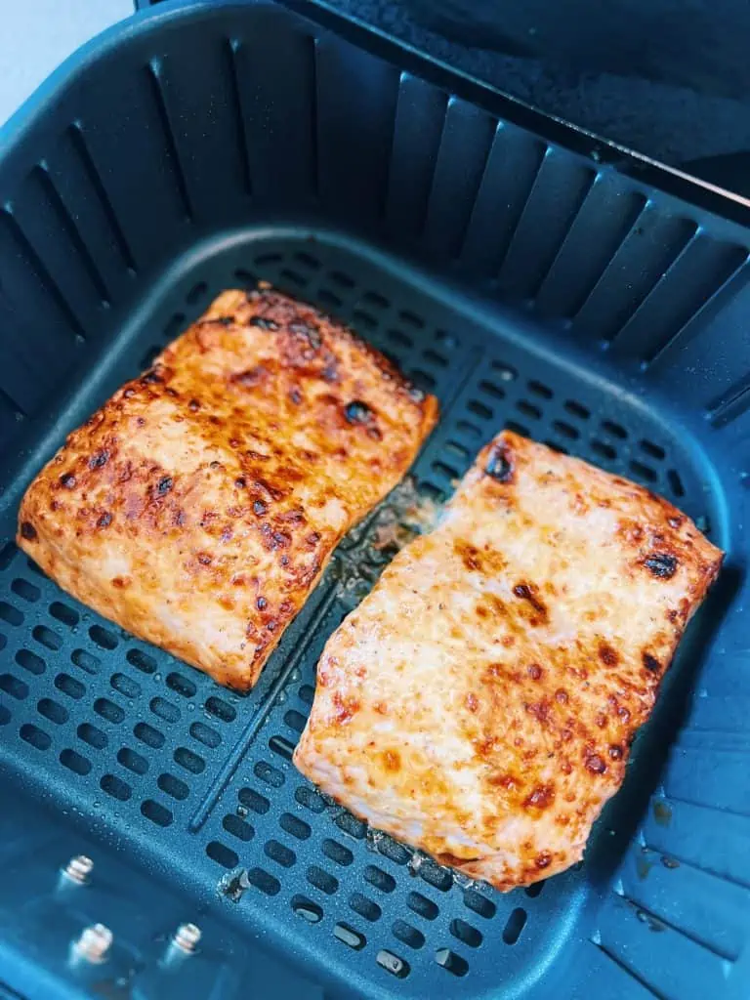

15Min Salmon

This air fryer salmon is full of flavor with a hint of sweetness.
It's moist, delicious, and ready in under 15 minutes.
Ingredients
- Cooking Spray
- Cajun seasonoing
- Brown Sugar
- Salmon filets
Steps
- Gather all ingredients. Preheat the air fryer to 390 degrees F (200 degrees C).
- Rinse and dry salmon fillets with a paper towel. Mist fillets with cooking spray.
- Mix together Cajun seasoning and brown sugar in a small bowl until combined; spread onto a plate.
- Press fillets, flesh-side down, into seasoning mixture.
- Spray the basket of the air fryer with cooking spray and place salmon fillets skin-side down. Mist salmon again lightly with cooking spray.
- Close the lid and cook in the preheated air fryer for 8 minutes. Remove from the air fryer and let rest for 2 minutes before serving.
Increase the cook time by 1 to 2 minutes if you prefer your salmon slightly more done. Do not overcook as it will dry out the salmon.